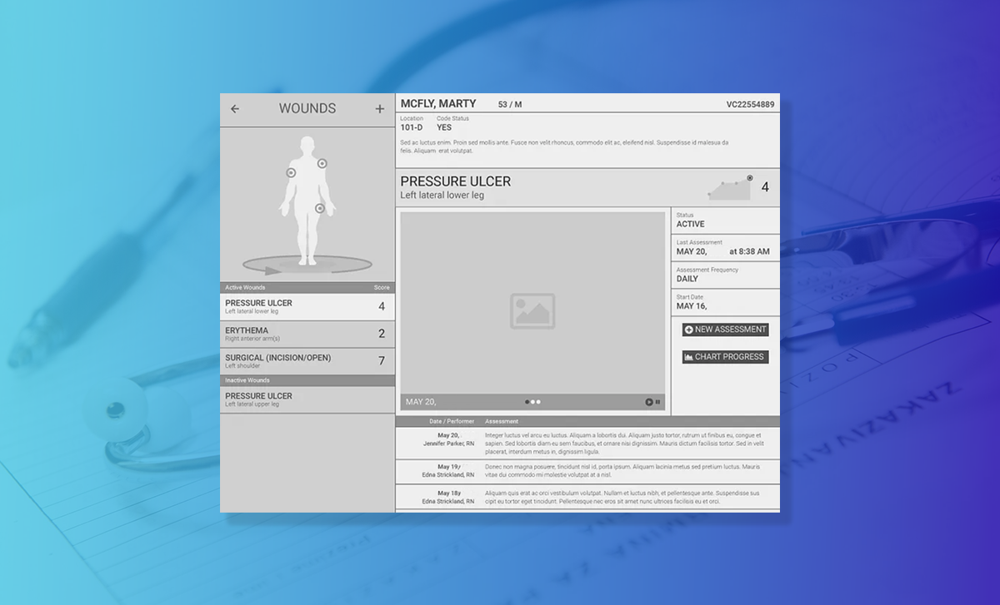
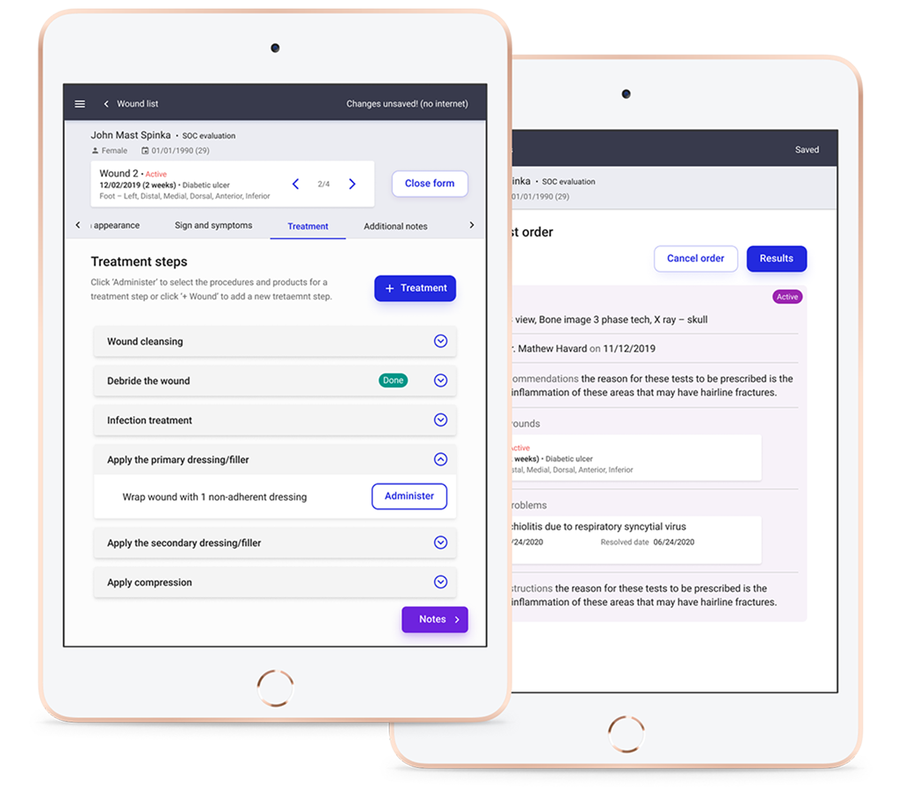
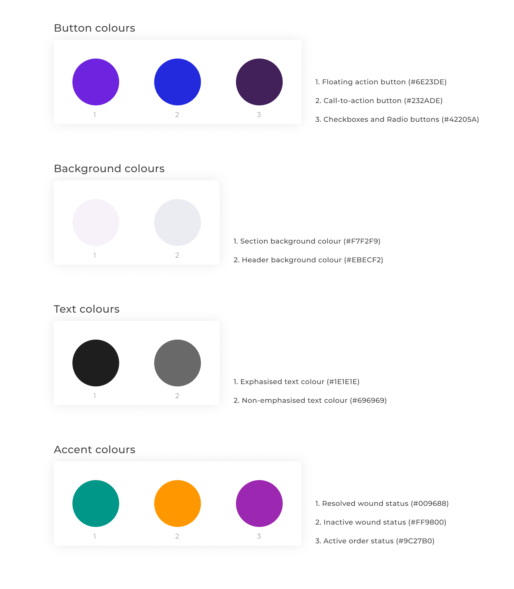
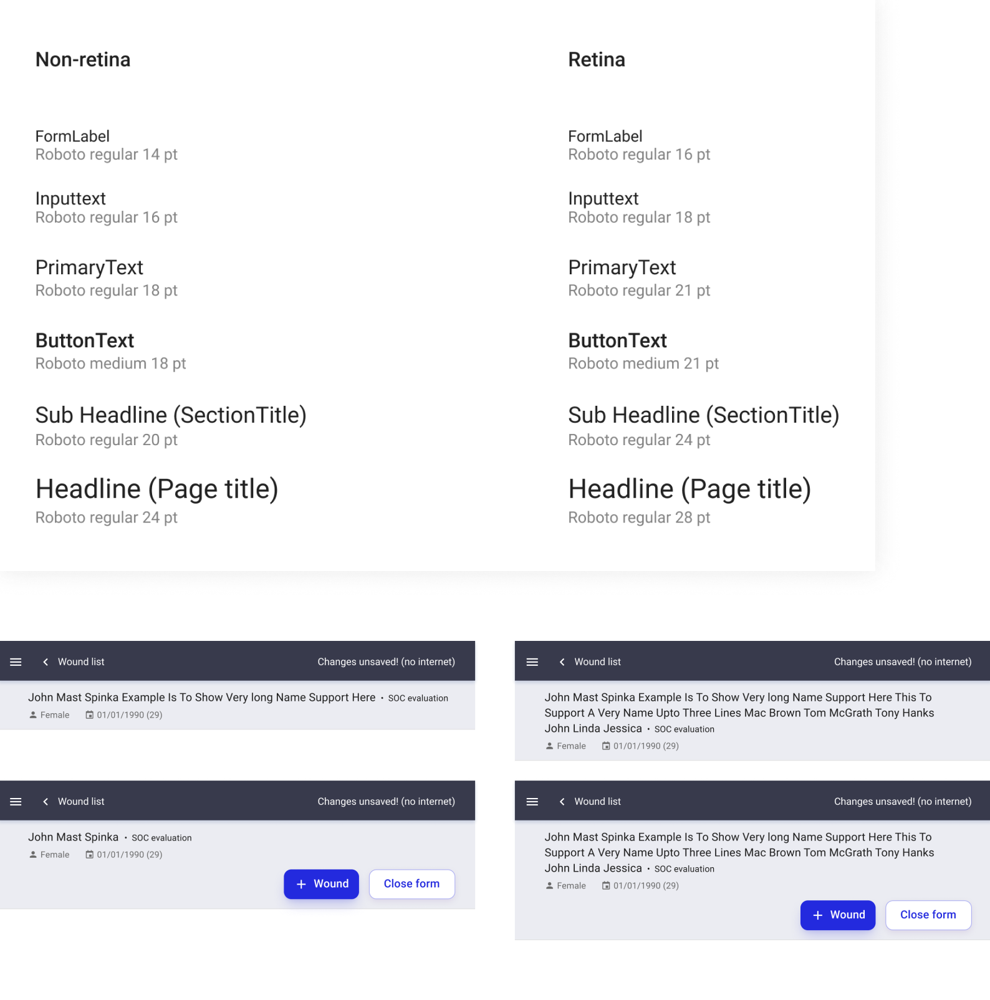
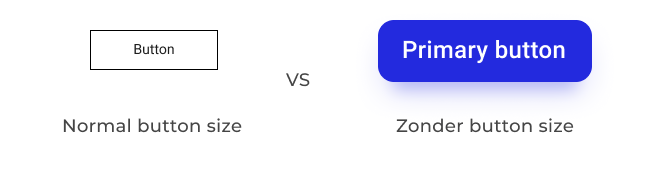
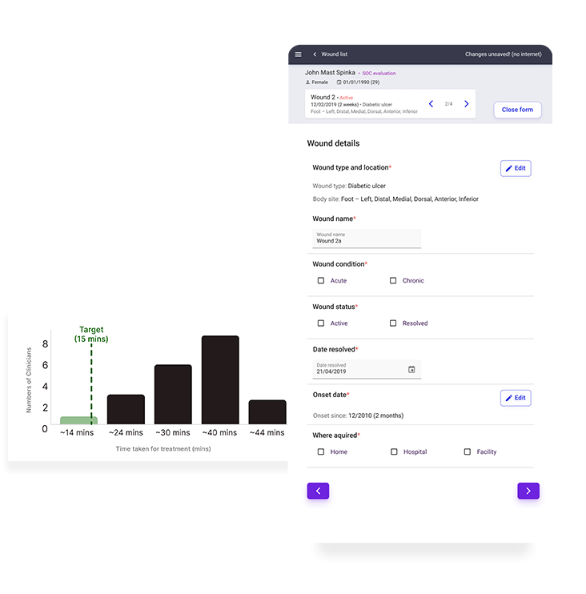
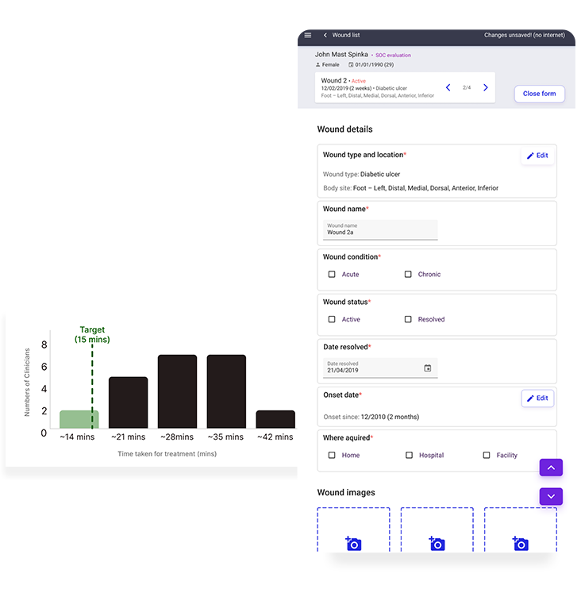
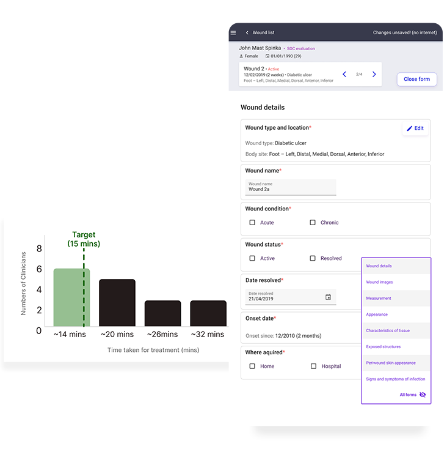
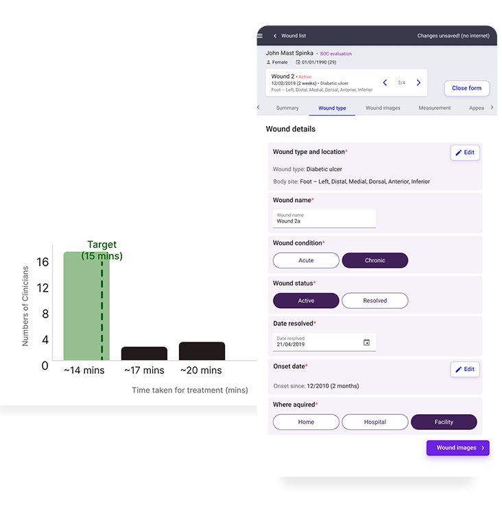
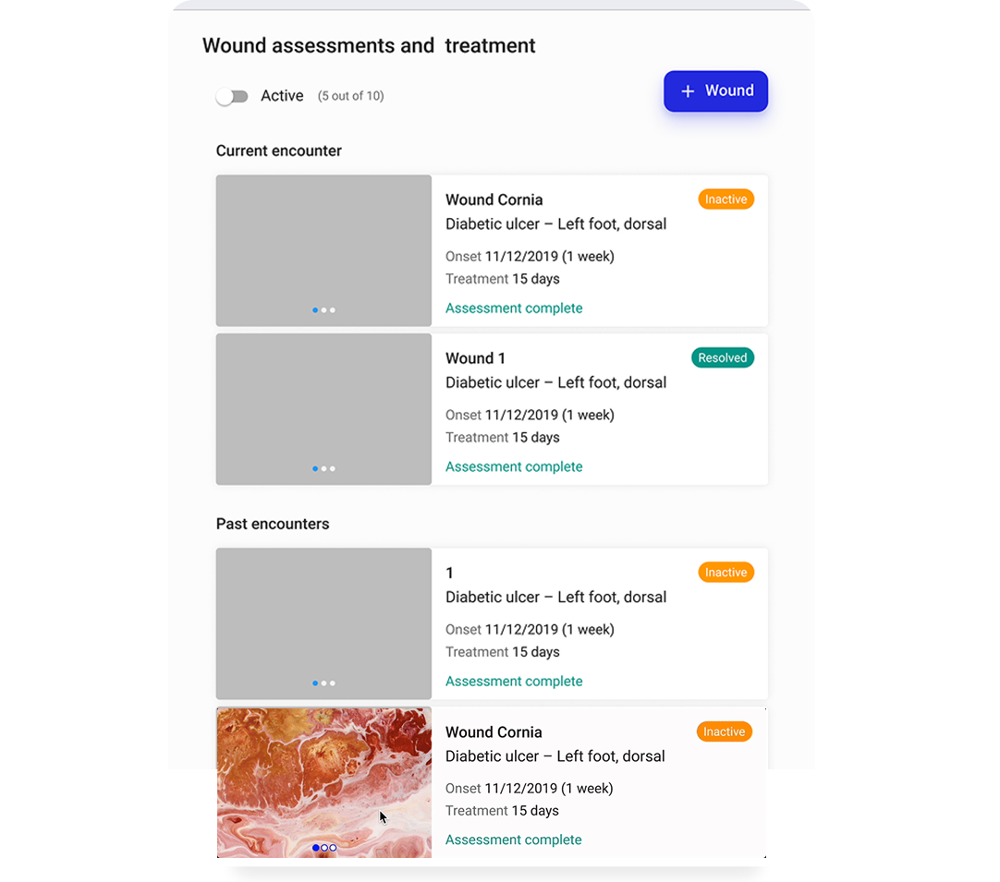

Zonder
— Clinical Aid Service

Summary —
Launched a product from 0 to 1 for clinicians to treat patients with ulcer wounds reducing treatment time from 1.5 hrs to 15 mins. #healthcare #B2B
The MVP
We developed a flexible treatment procedure for clinicians, allowing them to customize the order based on patient needs.

Opportunity 1 - Assessment & treatment flow
How might we enable clinicians to pick treatment procedures in the order that the clinicians want at any time?

Opportunity 2 - The digital transformation
How might we make the transition from paper based patient encounter to digital medium as smooth as possible for Clinicians?

Project Goal
Design a user-friendly digital wound care platform that enables accurate, real-time documentation through smart templates for wound assessment. Features like automated charting, remote supervision, and secure data syncing ensure clinical accuracy and streamline workflows, making wound care faster and more accessible for both providers and patients.
— Skip the Design Process
Design Process —
Context
I focused on making controls intuitive by placing them where clinicians expect, using large, contextually clear CTAs in consistent colors. Text and button colors were carefully chosen to meet WCAG AA and AAA contrast standards for accessibility.
Text, Background & Accent Contrast
Colors were carefully selected to meet AAA accessibility guidelines, ensuring proper contrast between text, background, and accent element redesign.

Larger font size
I used concise, familiar text for clinicians, with large headings to organize content and ample spacing between sections to signal transitions. Font sizes were chosen to enhance legibility for the target demographic.

Large buttons
The buttons were made larger so that Clinicians can tap on the button during treatment procedure without difficulty.

User testing
Usability testing with elderly clinicians helped refine workflows, improve accessibility, and ensure the interface was intuitive and efficient for real-world use. had.
Testing 1
Mimicking physical behavior digitally proved ineffective, navigation paths were unclear to clinicians, and flipping through pages resulted in wasted time during documentation.

Testing 2
Learnings revealed that animating pages up and down caused disorientation, and clinicians often struggled to identify which form they were currently on.

Testing 3
Learnings showed that improved visibility for accessing other forms was effective, but interaction with interactive components needed to be faster.

Final Testing Validation
4th testing met the criteria of treatment documentation completion in under 15 mins.
Final Result —
Speeding up other flows
The solution enabled 4x faster wound identification, significantly sped up the overall documentation process, and led to more focused, efficient treatment.
A dashboard where clinicians can track the progress of the patients and their wounds.



Final thoughts
We had successfully made a minimum viable product that was ready for the market. Through consistent design evangelism and design delivery, I was able to get both stakeholders and client onboard for having a design-led approach to the project.
My Role — Lead UX Designer, Timeline — 9 Months
Product Manager, Business Analyst, Developers, CTO